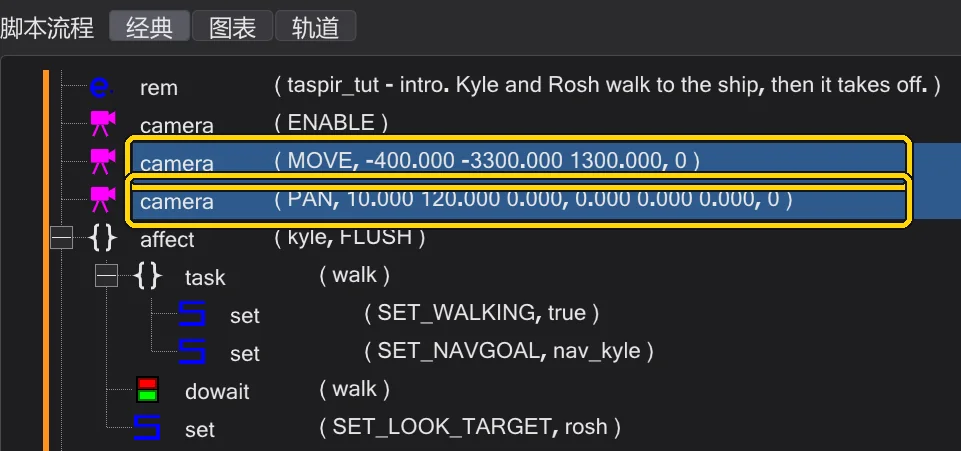
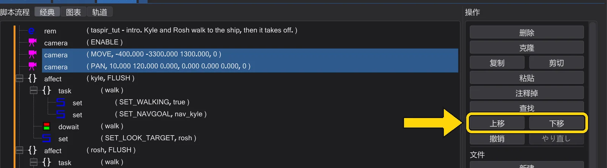
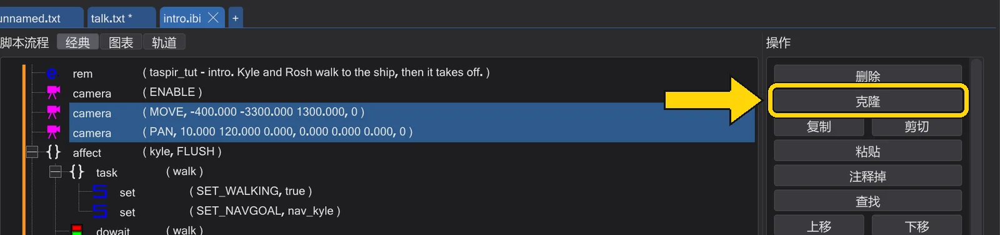
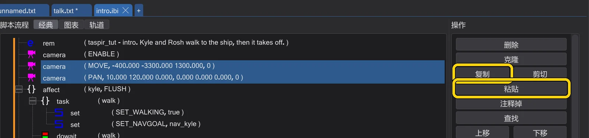
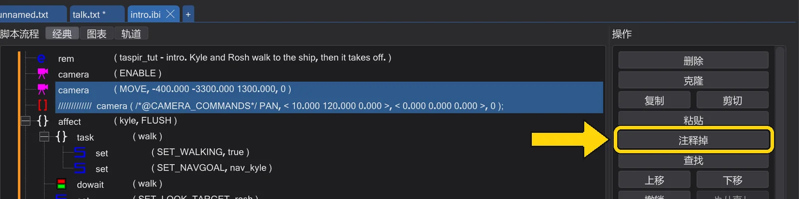
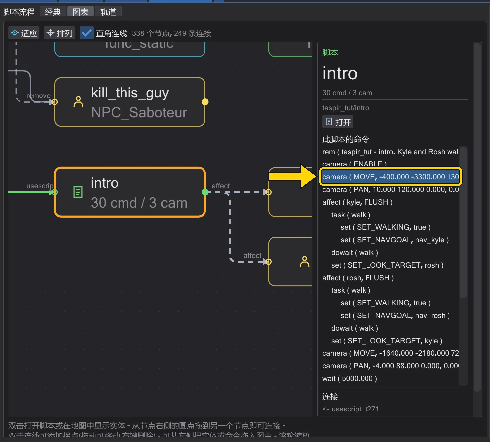
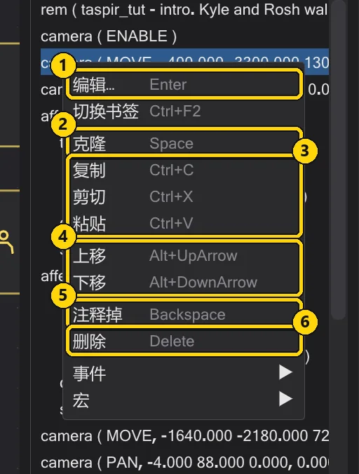
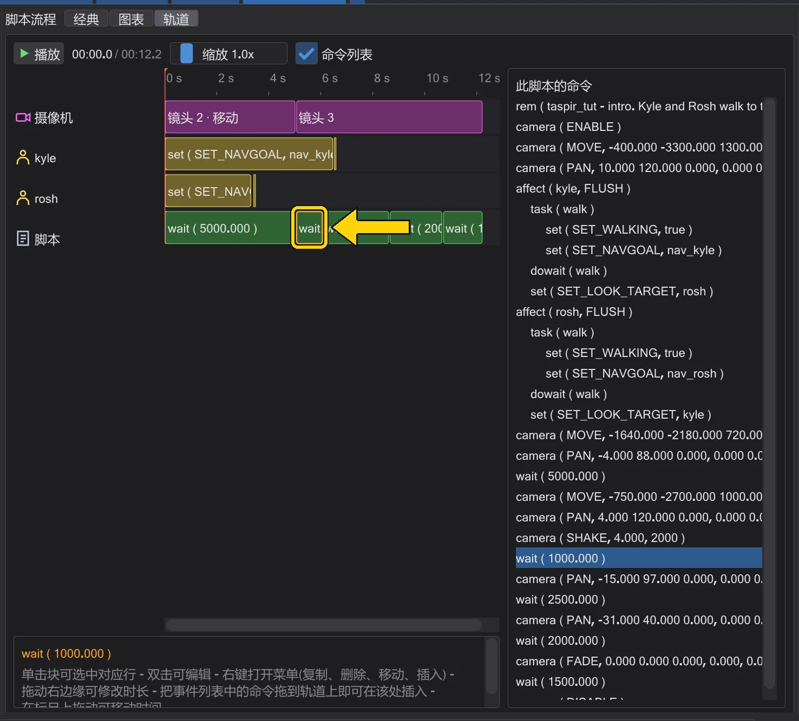
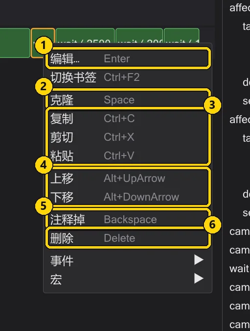
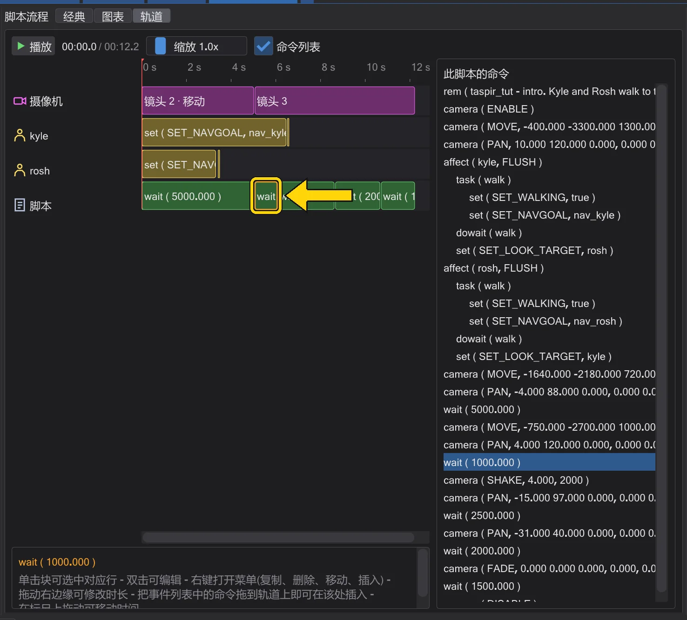

教程:脚本
移动、复制和注释掉行
重新整理脚本:选中多行、拖动、复制,以及在不删除的情况下停用行。
视图:
步骤#
- 1
选择。 单击树中的一行。Ctrl+单击可添加更多行,Shift+单击会选中两者之间的所有行。操作栏中的每个按钮都会同时作用于所有选中的行。

两个选中的行。 - 2
移动。 把选中内容拖到新位置——或按操作栏中的 上移 / 下移(Alt+↑ / Alt+↓)将其移动一行。它会留在自己的块内。块会连同其中的所有内容一起移动。

上移和下移。 - 3
复制一份。 克隆(Space)在正下方插入选中内容的副本——这是做出第二个摄像机镜头或第二段行走最快的方法。

克隆。 - 4
在脚本之间复制。 复制(Ctrl+C)复制选中内容。切换到另一个标签页,选中一行并按 粘贴(Ctrl+V):命令会插入到该行下方。

复制和粘贴。 - 5
停用而不删除。 注释掉(Backspace)把选中的行变成注释:它们仍留在脚本中,但游戏会跳过它们。再按一次(或 Ctrl+Backspace)即可重新启用。

注释掉:这两行现在是注释。


- 1
选择。 单击 此脚本的命令 下的一行。右侧的操作栏会作用于它,与经典视图中一样。

选中的行。 - 2
其余操作用右键。 行的菜单应有尽有:编辑…、克隆、复制、剪切、粘贴、上移、下移、注释掉 和 删除。

图表中某行的菜单。 编号 名称 作用 1 编辑… 打开事件编辑器。 2 克隆 在正下方创建一个副本。 3 复制 / 剪切 / 粘贴 通过剪贴板——也可以粘贴到另一个脚本中。 4 上移 / 下移 在所在的块内上移或下移一行。 5 注释掉(REM) 关闭该行(变为注释)或重新启用。 6 删除 删除该行。


- 1
选择。 单击时间轴中的一个块——或命令列表中的一行。

选中的块。 - 2
其余操作用右键。 块的菜单中有 编辑…、克隆、复制、剪切、粘贴、上移、下移、注释掉 和 删除。

轨道视图中块的菜单。 编号 名称 作用 1 编辑… 打开事件编辑器。 2 克隆 在其后紧跟一个副本——在时间轴上它接在原块之后。 3 复制 / 剪切 / 粘贴 通过剪贴板。 4 上移 / 下移 在脚本中上移或下移一行——这会改变时间上的先后顺序。 5 注释掉(REM) 关闭或启用该命令。 6 删除 删除它。 - 3
移动会改变时间。 把
wait上移或下移,其后的所有内容都会随之平移——注意观察块的移动。
执行“上移”后:其后的块开始得更早。


须知#
- 删除(Delete)会彻底删除行——不过 Ctrl+Z 可以把它们找回来。
本教程也可以在程序中运行:帮助 → 交互式教程。